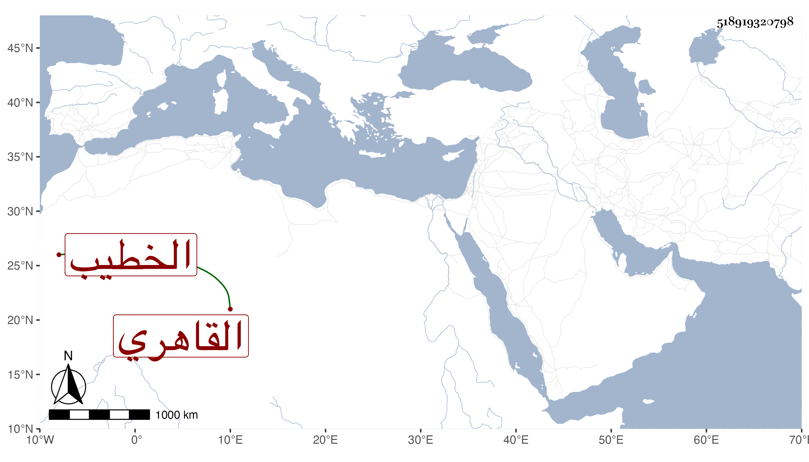

0902Sakhawi.DawLamic.ITO20230111-ara1.EIS1600.518919320798
Biography ID: 518919320798
283
عبد الرحمن بن علي بن صلاح الدين القاهري الخطيب والد عبد الرحمن الماضي . ممن اشتغل بالفقه وأصوله على العلم البلقيني والمناوي وسمع على أولهما وكذا سمع على ابن الديري بل حضر عند شيخنا وكتب عنه في الامالي من سنة سبع وعشرين وأجاز له وأذن له حسب سؤاله في عمل الميعاد ورثاه بأبيات ، وكان خطيبا بجامع البرددار بخط قنطرة قديدار ويشهد في تلك الخطة مذكورا بالصلاح اشتهر عند الاعلام بانه يتيسر له الحج وولد صالح فلما حملت زوجته توجه للحج فحج ومات في عشر ذي الحجة سنة اثنتين وستين بمسجد الخيف قبل طواف الافاضة ثم ولد له رحمه الله .
